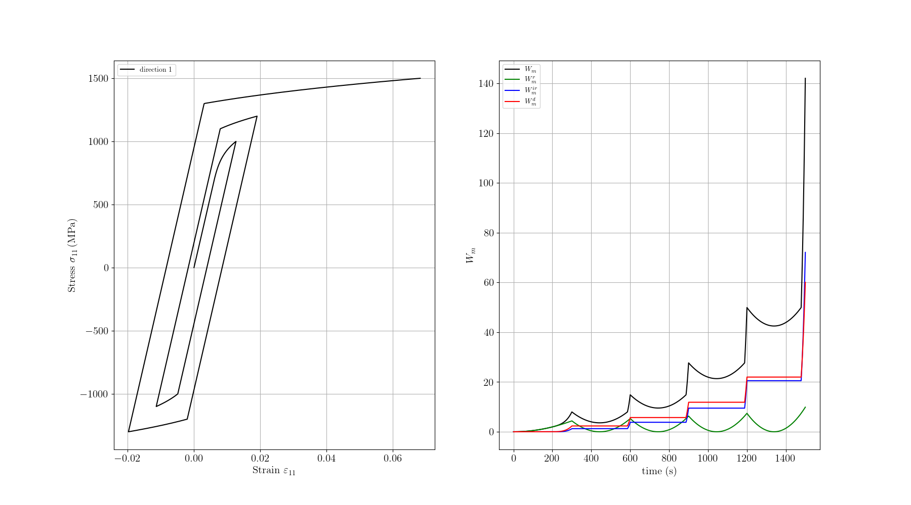
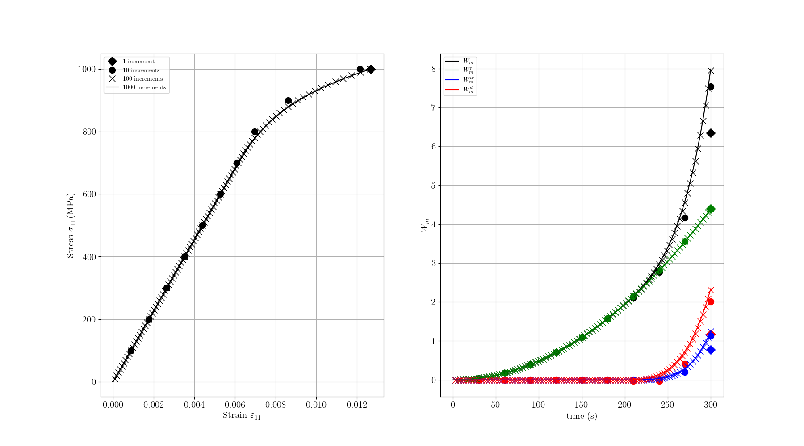

Note
Go to the end to download the full example code.
Plasticity with isotropic hardening example
- 
- 
import pylab
import numpy as np
import matplotlib.pyplot as plt
import simcoon as sim
import os
plt.rcParams["figure.figsize"] = (18, 10) # configure the figure output size
dir = os.path.dirname(os.path.realpath("__file__"))
plt.rc("text", usetex=True)
plt.rc("font", family="serif")
# ###################################################################################
# The elastic-plastic (isotropic hardening) constitutive law implemented in Simcoon is a rate independent, isotropic, von Mises type material with power-law isotropic hardening.
# Eight parameters are required for the thermomechanical version:
# The parameters required are:
#
# 1. The density :math:`\rho`
# 2. The specific heat :math:`c_p`
# 3. The Young modulus :math:`E`
# 4. The Poisson ratio :math:`\nu`
# 5. The coefficient of thermal expansion :math:`\alpha`
# 6. The von Mises equivalent yield stress limit :math:`\sigma_{Y}`
# 7. The hardening parameter :math:`k`
# 8. The hardening exponent :math:`m`
#
# The constitutive law is given by the set of equations :
#
# .. math::
#
# {\sigma}_{ij} & = L_{ijkl}\left({\varepsilon}^{\textrm{tot}}_{kl}-\alpha_{kl}\left(T-T^{\textrm{ref}}\right)-{\varepsilon}^{\textrm{p}}_{kl}\right) \\\\
# \dot{\varepsilon}^{\textrm{p}}_{ij} & =\dot{p}\Lambda_{ij}, \quad \Lambda_{ij}=\frac{3}{2}\frac{\sigma'_{ij}}{\overline{\sigma}}, \quad \sigma'_{ij}=\sigma_{ij}-\frac{1}{3}\sigma_{kk}\delta_{ij}, \quad \overline{\sigma}=\sqrt{\frac{3}{2}\sigma'_{kl}\sigma'_{kl}}, \\\\
# \Phi & =\overline{\sigma}-\sigma_{Y}-kp^m\leq 0, \quad \dot{p}\geq0,~~~ \dot{p}~\Phi=0
#
# where :math:`{\varepsilon}^{\textrm{p}}_{ij}` is the plastic strain tensor, :math:`p` is the plastic multiplier,
# :math:`\sigma'_{ij}` is the deviatoric part of the stress and :math:`\overline{\sigma}` is the von Mises equivalent
# stress (Lemaitre and Chaboche, 2002). Moreover, :math:`T^{\textrm{ref}}` is a reference temperature
# (usually the temperature at the beginning of the analysis).
#
# In Simcoon the elastoplastic material constitutive law is implemented using a *return mapping algorithm*,
# with use of the *convex cutting plane* algorithm (Simo and Hughes, 1998). The updated stress is provided for 1D,
# plane stress, and generalized plane strain/3D analysis according to the forms of elastic isotropic materials.
#
# The updated work, and internal heat production :math:`r` are determined with the algorithm presented in the *simcoon* documentation.
#
# As a start we should input the name of the UMAT as well as the list of parameters
umat_name = "EPICP" # This is the 5 character code for the elastic-plastic subroutine
nstatev = 8 # The number of scalar variables required, only the initial temperature is stored here
E = 113800
nu = 0.342
alpha = 0.86e-5
sigma_Y = 600
H = 1600
beta = 0.25
psi_rve = 0.0
theta_rve = 0.0
phi_rve = 0.0
solver_type = 0
corate_type = 3
# Define the properties
props = np.array([E, nu, alpha, sigma_Y, H, beta])
path_data = "data"
path_results = "results"
# Run the simulation
pathfile = "EPICP_path.txt"
outputfile = "results_EPICP.txt"
sim.solver(
umat_name,
props,
nstatev,
psi_rve,
theta_rve,
phi_rve,
solver_type,
corate_type,
path_data,
path_results,
pathfile,
outputfile,
)
# ###################################################################################
# Plotting the results
# --------------------------------------
# This is it, now we just need to plot the results.
# In the left, we plot the stress vs strain curve, and in the right the different work terms vs time:
# - :meth:`Wm <simcoon.Wm>` the mechanical work,
# - :meth:`Wm_r <simcoon.Wm_r>` the recoverable mechanical work,
# - :meth:`Wm_ir <simcoon.Wm_ir>` the irrecoverable mechanical work,
# - :meth:`Wm_d <simcoon.Wm_d>` the dissipated mechanical work.
# ###################################################################################
# prepare the load
fig = plt.figure()
outputfile_global = "results_EPICP_global-0.txt"
path = dir + "/results/"
P_global = path + outputfile_global
# Get the data
e11, e22, e33, e12, e13, e23, s11, s22, s33, s12, s13, s23 = np.loadtxt(
P_global, usecols=(8, 9, 10, 11, 12, 13, 14, 15, 16, 17, 18, 19), unpack=True
)
time, T, Q, r = np.loadtxt(P_global, usecols=(4, 5, 6, 7), unpack=True)
Wm, Wm_r, Wm_ir, Wm_d = np.loadtxt(P_global, usecols=(20, 21, 22, 23), unpack=True)
# Plot the results
ax = fig.add_subplot(1, 2, 1)
plt.grid(True)
plt.tick_params(axis="both", which="major", labelsize=15)
plt.xlabel(r"Strain $\varepsilon_{11}$", size=15)
plt.ylabel(r"Stress $\sigma_{11}$\,(MPa)", size=15)
plt.plot(e11, s11, c="black", label="direction 1")
plt.legend(loc=2)
ax = fig.add_subplot(1, 2, 2)
plt.grid(True)
plt.tick_params(axis="both", which="major", labelsize=15)
plt.xlabel("time (s)", size=15)
plt.ylabel(r"$W_m$", size=15)
plt.plot(time, Wm, c="black", label=r"$W_m$")
plt.plot(time, Wm_r, c="green", label=r"$W_m^r$")
plt.plot(time, Wm_ir, c="blue", label=r"$W_m^{ir}$")
plt.plot(time, Wm_d, c="red", label=r"$W_m^d$")
plt.legend(loc=2)
plt.show()
# ###################################################################################
# Here we test the increment size effect on the results
# ----------------------------------------------------------
# ###################################################################################
# Define increments and corresponding filenames
increments = [1, 10, 100, 1000]
outputfile_globals = {}
for inc in increments:
pathfile = f"EPICP_path_{inc}.txt"
outputfile = f"results_EPICP_{inc}.txt"
sim.solver(
umat_name,
props,
nstatev,
psi_rve,
theta_rve,
phi_rve,
solver_type,
corate_type,
path_data,
path_results,
pathfile,
outputfile,
)
outputfile_globals[inc] = f"results_EPICP_{inc}_global-0.txt"
# Prepare output file names and paths for each increment
outputfile_globals = {inc: outputfile_globals[inc] for inc in increments}
paths = [os.path.join(dir, "results", outputfile_globals[inc]) for inc in increments]
# Load data for each increment into a list of dicts
data = []
for path in paths:
# Strain and stress components
e11, e22, e33, e12, e13, e23, s11, s22, s33, s12, s13, s23 = np.loadtxt(
path, usecols=range(8, 20), unpack=True
)
# Time and other variables
time, T, Q, r = np.loadtxt(path, usecols=range(4, 8), unpack=True)
Wm, Wm_r, Wm_ir, Wm_d = np.loadtxt(path, usecols=range(20, 24), unpack=True)
data.append(
{
"e11": e11,
"s11": s11,
"time": time,
"Wm": Wm,
"Wm_r": Wm_r,
"Wm_ir": Wm_ir,
"Wm_d": Wm_d,
}
)
# ###################################################################################
# Plotting the results
# --------------------------------------
#
# In the left, we plot the stress vs strain curve, and in the right the different work terms vs time
# Note the ["D", "o", "x", None] markers used to differentiate the different increment sizes:
# ["1 increment", "10 increments", "100 increments", "1000 increments"]
#
# ###################################################################################
fig = plt.figure()
markers = ["D", "o", "x", None]
labels = ["1 increment", "10 increments", "100 increments", "1000 increments"]
colors = ["black", "black", "black", "black"]
# First subplot: Stress vs Strain
ax1 = fig.add_subplot(1, 2, 1)
plt.grid(True)
plt.tick_params(axis="both", which="major", labelsize=15)
plt.xlabel(r"Strain $\varepsilon_{11}$", size=15)
plt.ylabel(r"Stress $\sigma_{11}$\,(MPa)", size=15)
for i, d in enumerate(data):
if markers[i] is not None:
plt.plot(
d["e11"],
d["s11"],
linestyle="None",
marker=markers[i],
color=colors[i],
markersize=10,
label=labels[i],
)
else:
plt.plot(d["e11"], d["s11"], c=colors[i], label=labels[i])
plt.legend(loc=2)
# Second subplot: Work terms vs Time
ax2 = fig.add_subplot(1, 2, 2)
plt.grid(True)
plt.tick_params(axis="both", which="major", labelsize=15)
plt.xlabel("time (s)", size=15)
plt.ylabel(r"$W_m$", size=15)
work_colors = ["black", "green", "blue", "red"]
work_keys = ["Wm", "Wm_r", "Wm_ir", "Wm_d"]
work_labels = [r"$W_m$", r"$W_m^r$", r"$W_m^{ir}$", r"$W_m^d$"]
for i, d in enumerate(data):
for j, (wk, wc, wl) in enumerate(zip(work_keys, work_colors, work_labels)):
if markers[i] is not None:
plt.plot(
d["time"],
d[wk],
linestyle="None",
marker=markers[i],
color=wc,
markersize=10,
label=wl if i == len(data) - 1 else None, # Only label once
)
else:
plt.plot(d["time"], d[wk], c=wc, label=wl)
plt.legend(loc=2)
plt.show()
#
Total running time of the script: (0 minutes 8.554 seconds)